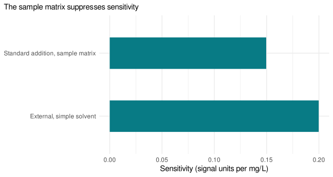
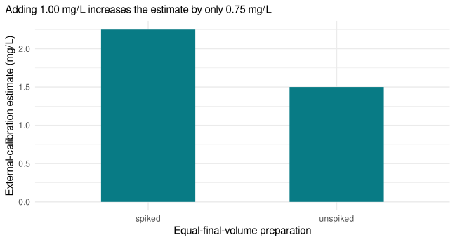
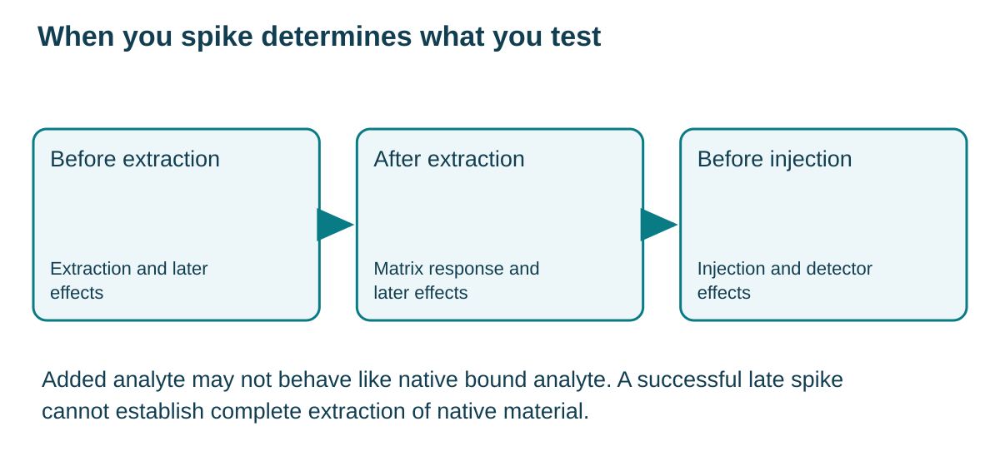
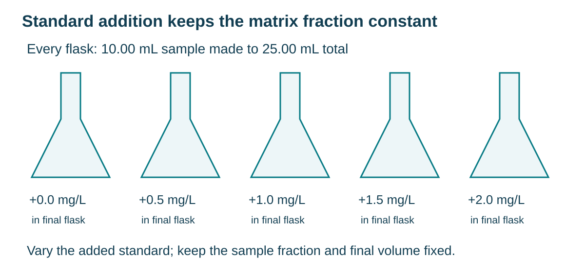
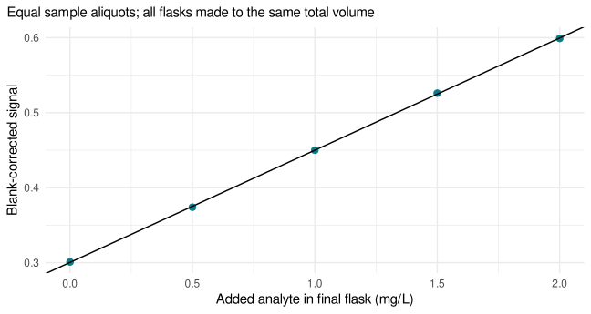
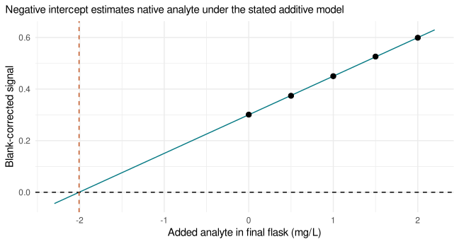

library(readr)
library(dplyr)
library(ggplot2)
spikes <- read_csv("data/course/spike-recovery.csv", show_col_types = FALSE)
recovery_percent <- 100 * diff(spikes$externally_estimated_mg_l_final) /
diff(spikes$added_mg_l_final)
recovery_percentMatrix effects and recovery
Find why a good calibration can still give a biased sample result
Interactive experiment
Explore the browser demo: Which matrix effects can standard addition address, and which can bias its intercept? Predict first, change one condition, then explain the result. Export a CSV to reproduce one calculation or plot in R.
Why did a plausible result come out low?
External standards in a simple solvent give one response per unit analyte. The same analyte in a sample matrix can give a different response. A good straight line in the standards does not prove the calibration transfers to the sample. Here you will compare sensitivities, calculate spike recovery, and use a fixed-volume standard-addition model.
The simulated assay measures a dissolved analyte after matched preparation. All signals in this unit are already background corrected. Equal sample aliquots are made to equal final volumes. Those definitions are necessary for the intercept calculation below.

A multiplicative matrix effect changes sensitivity. An additive interference contributes signal not proportional to the analyte being added. Standard addition can compensate for some multiplicative effects under suitable conditions. It cannot automatically distinguish native analyte signal from an unrelated additive signal.
Use a spike to ask a limited question
Suppose two otherwise matched final solutions contain the same sample fraction. The second includes an extra 1.00 mg/L analyte in its final volume. External calibration estimates 1.50 mg/L for the first and 2.25 mg/L for the second.
\[\mathrm{recovery}(\%)=100\, \frac{c_{spiked,estimated}-c_{unspiked,estimated}}{c_{added}}\]

The incremental recovery is 75%. These two records have explicitly ordered unspiked/spiked roles and equal final volume; a general dataset should be matched by its preparation identifiers and roles, not arbitrary row order. No universal acceptance window is assumed here. This result flags a response problem under the example conditions.

A late spike does not pass through earlier extraction losses. A freely dissolved spike may also differ from native bound analyte. State what the spike tested, when it was added and what chemical equivalence you assume.
Construct standard additions with fixed sample fraction
Each flask receives 10.00 mL of the same sample and is made to 25.00 mL total. Added standard is expressed as mg/L in that final flask. Thus the native sample concentration in every flask is \(c_s(10/25)\).

For an additive linear response with sensitivity \(b\) and correctly removed background,
\[y=b\left(c_s\frac{V_s}{V_f}+c_{added,final}\right)\]
Fitting \(y=a+b c_{added,final}\) gives negative x-intercept \(-a/b\). Its magnitude estimates the native concentration after the sample’s dilution into the flask. Recover the original concentration by multiplying by \(V_f/V_s\). IUPAC standard-addition terminology
additions <- read_csv("data/course/standard-addition.csv", show_col_types = FALSE)
fit_sa <- lm(blank_corrected_signal ~ spike_mg_l_final, data = additions)
a_sa <- unname(coef(fit_sa)[1])
b_sa <- unname(coef(fit_sa)[2])
x_intercept <- -a_sa / b_sa
original_mg_l <- -x_intercept * 25.00 / 10.00
c(x_intercept_mg_l_final = x_intercept, original_mg_l = original_mg_l)
The fitted intercept is 0.3004, slope 0.1496, and x-intercept about −2.0080 mg/L. The original concentration is therefore 5.020 mg/L. It is a conditional point estimate; neither the intercept nor the dilution volumes are exact.

We do not physically prepare negative analyte. Extrapolation is justified only through this specified signal model and design. Curvature, changing matrix fraction, poor background correction or different behaviour of added and native analyte can invalidate it. Ordinary unknowns beyond an external-calibration range still need new measurements; this design is a different inference problem.
Compare the external-calibration answer
external <- read_csv("data/course/external-matrix.csv", show_col_types = FALSE)
fit_ext <- lm(blank_corrected_signal ~ c_mg_l, data = external)
external_final <- (additions$blank_corrected_signal[1] - coef(fit_ext)[1]) /
coef(fit_ext)[2]
external_original <- unname(external_final) * 25 / 10
external_original
write_csv(data.frame(standard_addition_mg_l = original_mg_l,
external_calibration_mg_l = external_original,
incremental_spike_recovery_percent = recovery_percent),
"output/matrix-comparison.csv")The external estimate is about 3.761 mg/L. The lower matrix sensitivity explains its low result under the simulation model. This is not a reason to divide every unknown by a single recovery factor: samples can have different matrices, and an observed failure need not have the assumed cause.
Practical and transfer
Report both calibration answers, the spike calculation, standard-addition plot, negative-intercept interpretation and dilution correction. Explain why the background assumption matters and list one failure that standard addition would not solve. For this introductory unit, retain the point-estimate status and identify the uncertain intercept/slope and volumes; do not call the fitted intercept’s response interval a concentration interval.
For a new fixed-volume design, 5.00 mL sample is made to 20.00 mL total in every flask. The line is \(y=0.240+0.120 c_{added,final}\). Calculate the original concentration. What if all flasks instead received different final volumes without a volume correction?
Numerical and design checks
\(x_0=-2.00\) mg/L; original concentration is 8.00 mg/L. Different final volumes change native concentration and matrix fraction, so the simple fixed-volume intercept formula no longer applies directly.
Selected Harris and Lucy reading: calibration and spectrophotometric applications. Read by topic; the planned course edition is not yet confirmed.
Slides · Course project · R reference
Previous: UV and visible absorption · Next: Atomic measurements